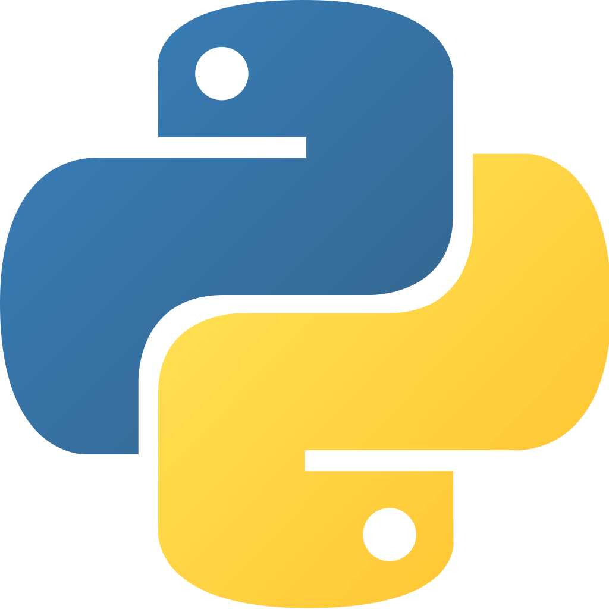
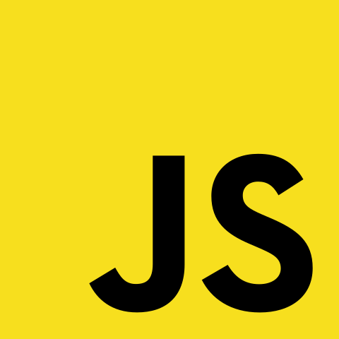
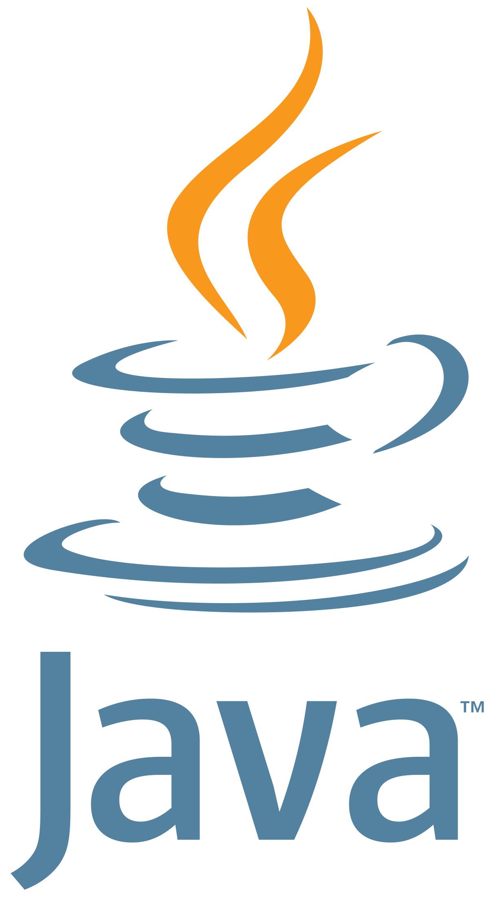
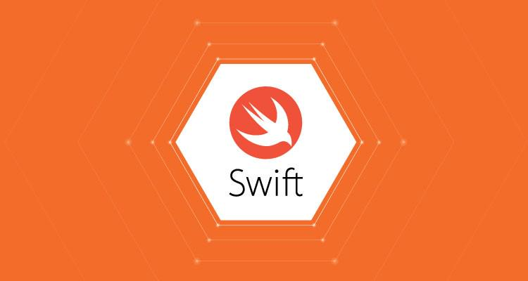
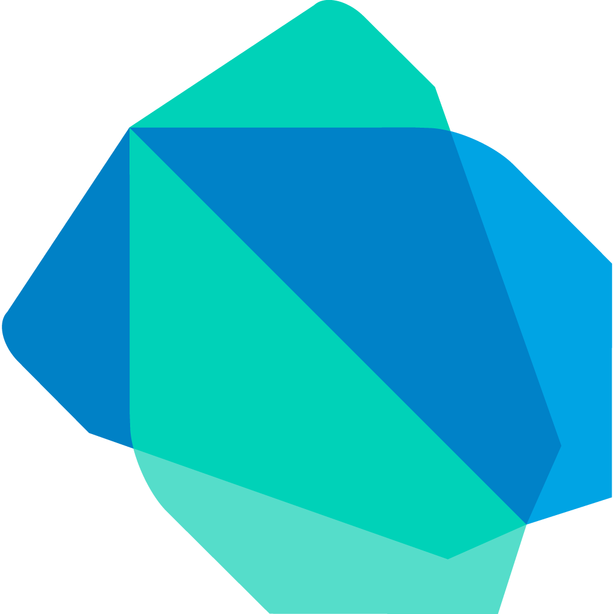
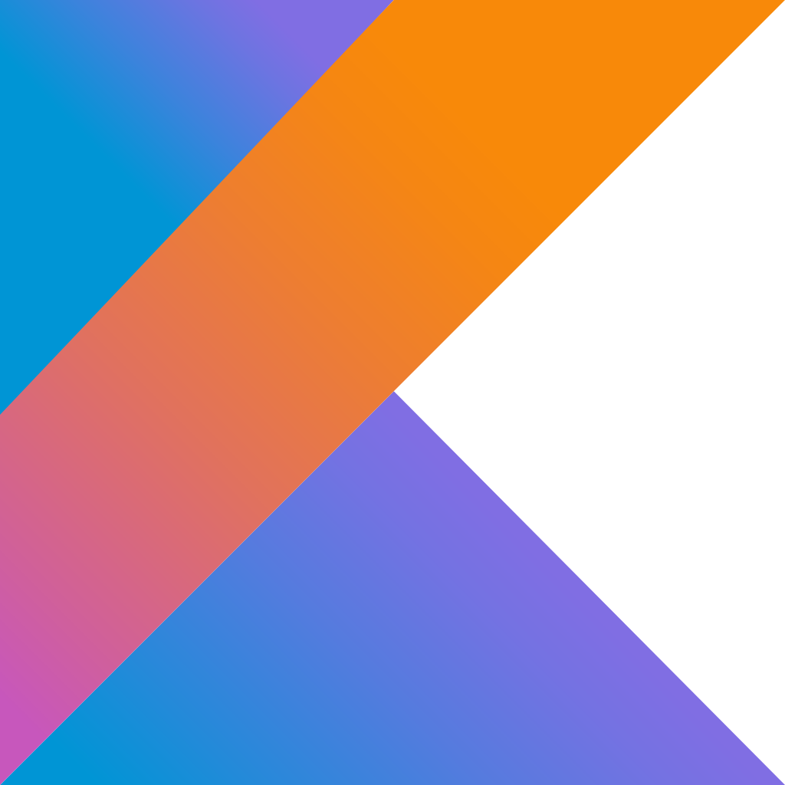

7 ngôn ngữ lập trình dễ học cho người mới bắt đầu 2020
Trong bài viết này, tôi sẽ cung cấp cho bạn 7 ngôn ngữ lập trình hàng đầu nên được xem xét trong khi bạn muốn học một ngôn ngữ lập trình mới vào năm 2020. Danh sách này dựa trên thị trường việc làm, cộng đồng, hiệu quả của lập trình ngôn ngữ, StackOverflow và xu hướng google.
-
Ngôn ngữ lập trình Python
Python là ngôn ngữ lập trình hướng đối tượng, cấp cao, mạnh mẽ, được tạo ra bởi Guido van Rossum. Đây là một trong những ngôn ngữ phổ biến nhất trên thị trường. Lý do đằng sau sự phổ biến của python là do các công nghệ xu hướng như Machine Learning, Data Science, Artificial Intelligence, Backend Development, và danh sách này còn tiếp tục. Python có thể sử dụng trong nhiều lĩnh vực để giải quyết các vấn đề kinh doanh một cách đơn giản. Những lý do để được xem xét để học Python:
- Cộng đồng lớn, hỗ trợ tốt.
- Cú pháp đơn giản, dễ học.
- Một số lượng lớn thư viện của bên thứ 3 giúp công việc của các lập trình viên dễ dàng hơn.
- Xu hướng trên Stackoverflow và Google.
- Cơ hội việc làm lớn.
- Mức lương trung bình là $120,000 mỗi năm.
Python chủ yếu được sử dụng bởi các nhà phát triển, nhà khoa học dữ liệu, nhà nghiên cứu, nhà bảo mật dữ liệu.
Nếu bạn muốn bắt đầu sự nghiệp của mình với Machine Learning, Data Science, Ethical Hacking hoặc Backend Development bạn nên tìm hiểu Python
-
Javascript
JavaScript là ngôn ngữ phổ biến nhất trên thế giới trong suốt 20 năm qua. Nó cũng là một trong số 3 ngôn ngữ chính của lập trình web. JavaScript có thể học nhanh và dễ dàng áp dụng cho nhiều mục đích khác nhau, từ việc cải thiện tính năng của website đến việc chạy game và tạo phần mềm nền web. Hơn nữa, có hàng ngàn mẫu template JavaScript và ứng dụng ngoài kia, nhờ vào sự cống hiến của cộng đồng, đặc biệt là Github. Những lý do để được xem xét để học ngôn ngữ này là:
- Thị trường việc làm cao.
- Trái tim phát triển web Front End. Bạn không thể tưởng tượng được trang web trong thời kỳ hiện đại mà không có javascript.
- Tăng trưởng nhanh chóng trong Stackoverflow và Google.
- Cộng đồng lớn, hỗ trợ tốt.
- Mức lương trung bình là $114,777 mỗi năm.
Nếu bạn muốn bắt đầu sự nghiệp phát triển web của mình, bạn nên tìm hiểu Javascript.
-
Java
Java là ngôn ngữ lập trình hướng đối tượng bậc cao. Đây là một trong những ngôn ngữ lập trình nổi tiếng và gây tiếng vang nhất trong 15 đến 20 năm qua. Nó được sử dụng để phát triển ứng dụng Android, ứng dụng với dữ liệu lớn, ứng dụng phía máy chủ, ứng dụng nhúng, ứng dụng cấp doanh nghiệp và nhiều ứng dụng khoa học khác. Nó có một kỹ thuật quản lý bộ nhớ tốt giúp các nhà phát triển làm cho các ứng dụng hiệu quả hơn. Những lý do để được xem xét để học ngôn ngữ này là:
- Thị trường việc làm tốt.
- Nó được sử dụng để phát triển các ứng dụng dữ liệu lớn, ứng dụng phía máy chủ và nhiều ứng dụng khác.
- Hỗ trợ cộng đồng tốt trong Stackoverflow.
- Mức lương trung bình là $106,610 mỗi năm.
Nếu bạn muốn xây dựng sự nghiệp về Big Data, Back end thì bạn chắc chắn nên thử ngôn ngữ này.
-
Swift
Swift là một ngôn ngữ hướng đối tượng dành cho việc phát triển iOS và macOS, watchOS, tvOS, Linux, và z/OS, được giới thiệu bởi Apple tại hội nghị WWDC 2014. Cho đến năm 2014 Objective-C được sử dụng để phát triển các ứng dụng trên môi trường Apple. Nhưng từ năm 2014 trở đi mọi thứ thay đổi đột ngột, điều này làm cho ngôn ngữ này trở nên phổ biến hơn. Đây là một trong những ngôn ngữ lập trình đang phát triển nhanh chóng. Hiện tại, nó có phiên bản mới nhất là 5.2. Những lý do để được xem xét để học ngôn ngữ này là:
- Ngôn ngữ chính trong Apple.
- Nó được sử dụng để phát triển iOS, macOS, watchOS, các ứng dụng.
- Thị trường việc làm tốt.
- Mức lương trung bình là $ 125,252 mỗi năm.
Nếu bạn muốn trở thành một nhà phát triển iOS thì bạn nên học ngôn ngữ này.
-
Dart
Dart là ngôn ngữ lập trình mới, được phát triển bởi Google, hiện đã được chấp thuận bởi tổ chức Ecma. Dart được sử dụng để xây dựng các loại ứng dụng: web, server, di động (IOS và Android với công cụ Flutter).
Dart hỗ trợ lập trình hướng đối tượng, cú pháp kiểu C, mã code Dart có thể biên dịch thành JavaSript để chạy trên trình duyệt. Nó hỗ trợ những khái niệm lập trình hiện đại như giao diện lớp, lớp trừu tượng ...
Từ ngôn ngữ lập trình Dart, Google giới thiệu SDK Flutter để sử dụng ngôn ngữ Dart phát triển ứng dụng di động chạy đa nền tảng (Một lần viết code build ra ứng dụng cho ISO và Android). Những lý do để được xem xét để học ngôn ngữ này là:
- Ngôn ngữ hỗ trợ đa nền tảng.
- Thị trường việc làm tốt vì nó có rất nhiều tính năng linh hoạt, các công ty muốn thuê các nhà phát triển có kiến thức về Dart và Flutter.
- Tăng trưởng nhanh chóng trên thị trường.
- Mức lương trung bình là $121,846 mỗi năm.
Nếu bạn muốn trở thành một nhà phát triển App, bạn chắc chắn nên tìm hiểu ngôn ngữ này.
-
Kotlin
Kotlin là một ngôn ngữ mới được phát triển bởi Jetbrains, Kotlin cũng giống như Java, kotlin chạy trên nền tảng JVM ( Java Virtual Machine ) và sử dụng các công cụ thư viện hiện có của Java. Kotlin được giới thiệu từ năm 2011 cho đến khi phát hành phiên bản 1.0 thì mục tiêu quan trọng là tính hữu dụng. Jetbrains luôn chú trọng tới tính tương hợp với Java. Kotlin cũng sở hữu những tính năng hoàn toàn mới như giúp ngăn chặn các lỗi NULL POINTER, một lỗi đáng sợ với mọi lập trình viên. Do kotlin làm việc với cùng code và cơ sở hạ tầng của Java nên kotlin sẽ không có trình quản lý gói và build system của riêng nó. Những lý do để đượđô la c xem xét để học ngôn ngữ này là:
- Thị trường việc làm tốt.
- Hỗ trợ cộng đồng tốt nhưng không nhiều.
- Hỗ trợ đa nền tảng.
- Mức lương trung bình là $99.188 mỗi năm.
Nếu bạn muốn học phát triển Android khi mới bắt đầu thì tôi sẽ giới thiệu Kotlin chứ không phải Java.
-
Golang
Go là một ngôn ngữ lập trình được thiết kế dựa trên tư duy lập trình hệ thống. Go được phát triển bởi Robert Griesemer, Rob Pike và Ken Thompson tại Google vào năm 2007. Điểm mạnh của Go là bộ thu gom rác và hỗ trợ lập trình đồng thời (tương tự như đa luồng – multithreading). Go là một ngôn ngữ biên dịch như C/C++, Java, Pascal… Go được giới thiệu vào năm 2009 và được sử dụng hầu hết trong các sản phẩm của Google. Ngôn ngữ này cũng có sự tăng trưởng nhanh chóng tốt trên thị trường. Những lý do để được xem xét để học ngôn ngữ này là:
- Tăng trưởng nhanh chóng trên thị trường.
- Thị trường việc làm tốt .
- Mức lương trung bình là $135.000 mỗi năm.
Nếu bạn muốn trở thành một nhà phát triển backend thì tôi khuyên bạn Go sẽ là sự lựa chọn tốt hơn. Trong trường hợp bạn muốn phát triển một ứng dụng cấp doanh nghiệp hoặc thương mại điện tử thì tôi sẽ đề xuất node.js (khung Javascript) sẽ là lựa chọn tốt hơn.
Kết luận
Tôi hy vọng bạn có một ý tưởng rõ ràng về ngôn ngữ lập trình nào sẽ chọn và học vào năm 2020, hãy chọn ngôn ngữ phù hợp để học và thành thạo nó.
Tôi hy vọng điều này sẽ giúp bạn tìm hiểu nhiều hơn về các ngôn ngữ lập trình phổ biến vào năm 2020.
Nguồn tham khảo.